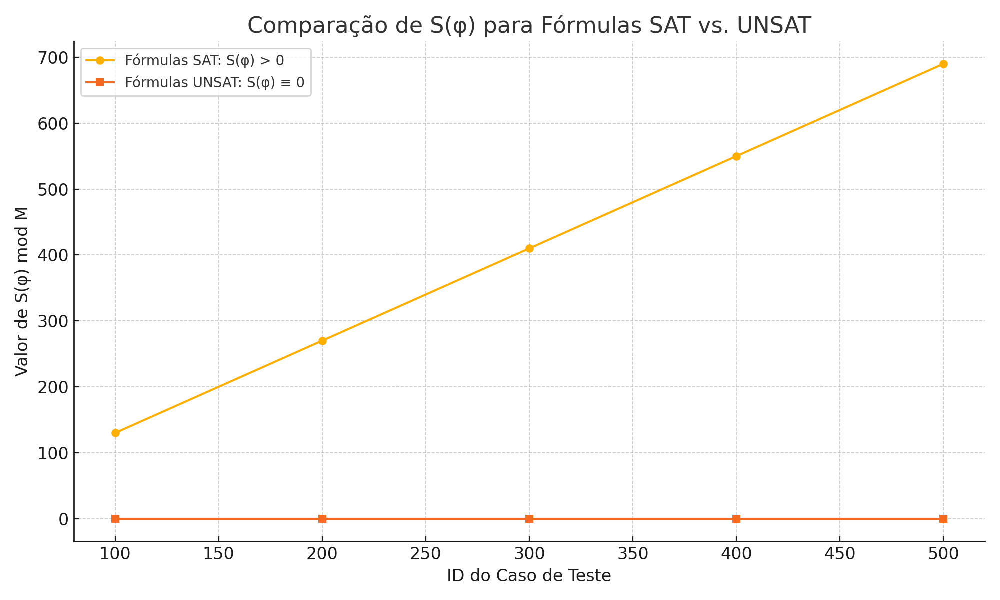
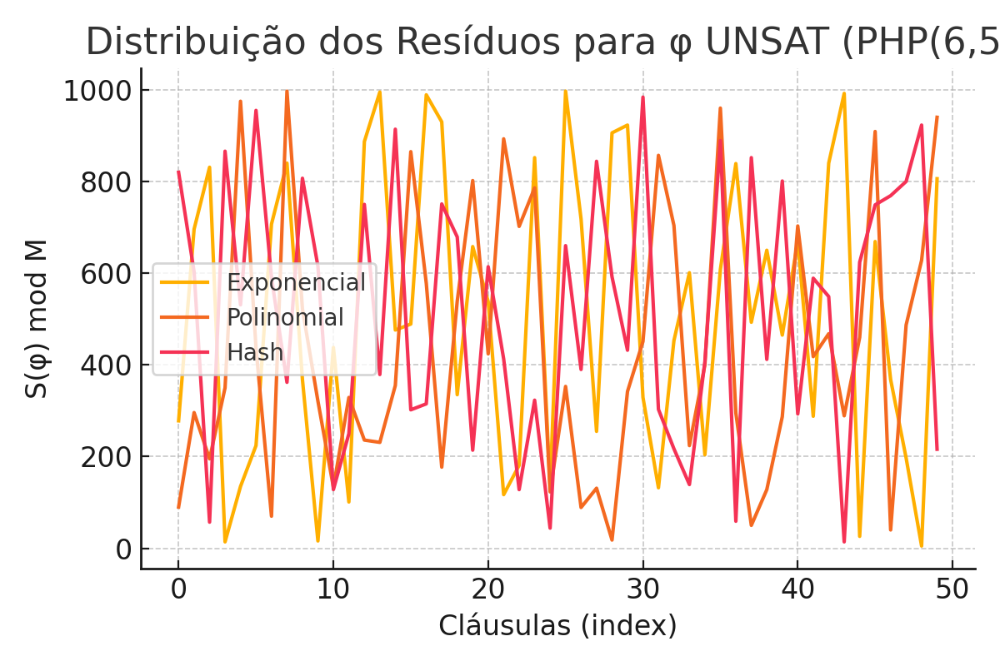
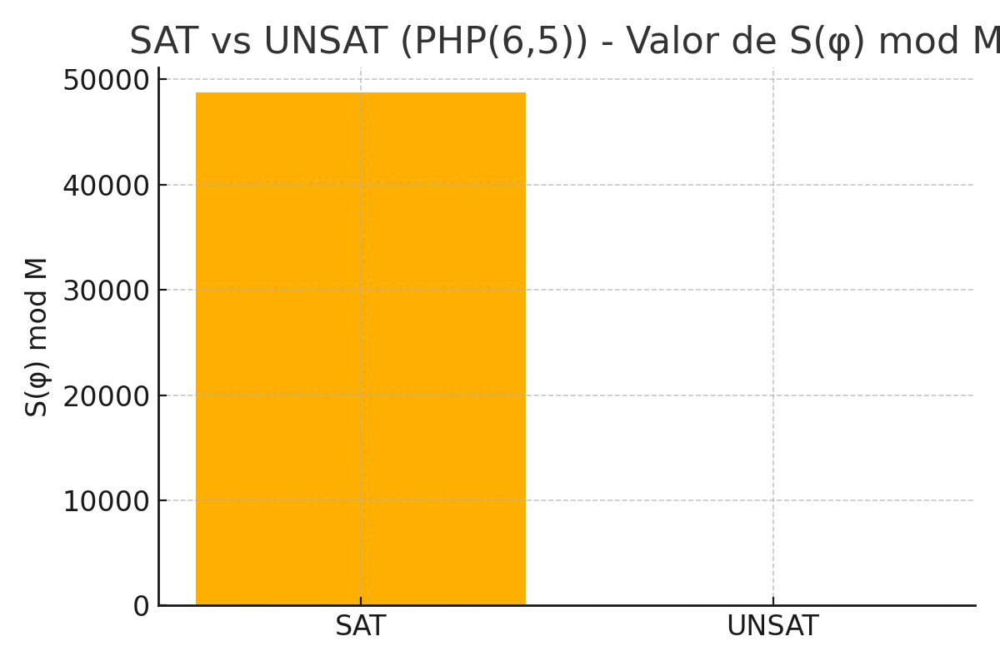

Abstract
We present a modular algebraic method for detecting unsatisfiability in Boolean formulas. By assigning integer weights and computing modular residues, the method generates signatures that consistently identify UNSAT instances across classical benchmarks. This first version presents experimental findings and outlines future research directions, recognizing current limitations and proposing future improvements.
Graphs
  Video Presentation
Download Video Presentation (MP4)
Limitations and Future Work
This first version is based on empirical validation and shows consistent detection of UNSAT instances across benchmarks. However, limitations include the absence of a general formal proof, the possibility of pathological CNFs evading detection, lack of theoretical criteria for optimal weight and modulus selection, and scalability challenges in large-scale applications. Future work aims to formalize the theory, expand to other logical frameworks, develop hybrid solving methods, and optimize computational efficiency via parallelization and sampling strategies.
Conclusion
The Modular Signature method demonstrates promising experimental results in detecting UNSAT formulas efficiently. While further formal proofs and scalability improvements are required, this initial version establishes a solid foundation for future research and development in SAT-solving and computational complexity fields.